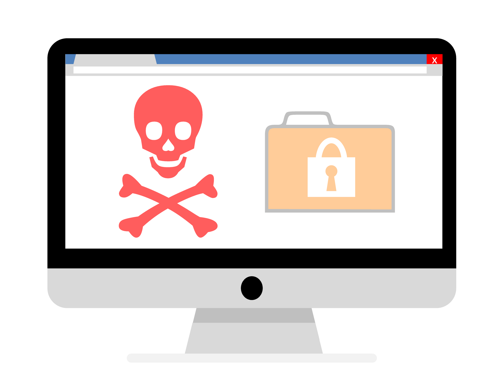
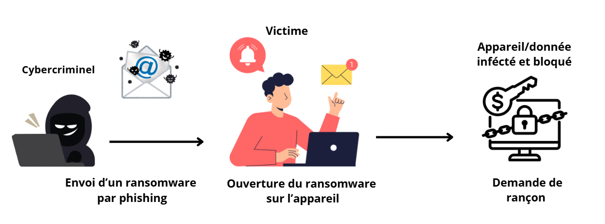

Le ransomware est une cyberattaque sophistiquée qui consiste à installer un malware sur un appareil ou sur un réseau interconnecté. Ce logiciel va ensuite chiffrer les données des appareils et bloquer l'accès à l'utilisateur. Pour récupérer leurs données, les pirates proposent de désactiver le malware en échange d'une rançon.

En général, les cyberattaques de ransomware se font en 3 étapes.
Premièrement, il faut trouver un moyen d'accéder aux données sensibles des entreprises ou des particuliers. La manière la plus courante c'est le phishing : ils approchent les victimes par e-mail ou SMS et essaient de les faire cliquer sur un lien ou une pièce jointe pour pouvoir installer le logiciel malveillant chez la victime.
Autrement, les attaquants vont rechercher des failles de sécurité directement dans les logiciels ou systèmes d'exploitation des appareils visés, et finalement il y en a également qui vont directement acheter des identifiants sur le Dark Web ou essaieront de prendre le contrôle en faisant une attaque par force brute en essayant un grand nombre de mots de passe.
Deuxièmement, les attaquants vont cibler les données sensibles et importantes qui sont stockées dans les différents appareils. Puis ils vont les copier et détruire tous les fichiers originaux ainsi que toutes les sauvegardes qu'ils ont à disposition. Finalement, ils vont les chiffrer et créer une clé de déchiffrement pour pouvoir la vendre.
Troisièmement,Troisièmement, une fois les données chiffrées et devenues inaccessibles aux utilisateurs, ils vont afficher un message sur les appareils infectés et demander une somme d'argent en échange de la clé de déchiffrement. En cas de refus de paiement, les attaquants vont souvent se mettre au chantage en menaçant de publier les données sensibles ou confidentielles.
Voici une représentation visuelle simplifiée :

Schéma simplifié d'une attaque de ransomware
Les ransomwares se distinguent sous deux branches principales :
Il y a eu plusieurs attaques de ransomware très célèbres, notamment :
L’attaque Wannacry était d’envergure mondiale car elle pouvait infecter tous les ordinateurs ayant Microsoft Windows qui n’avaient pas fait les dernières mises à jour de sécurité, car le système d’exploitation avait une faille critique et que sans les dernière corrections de Microsoft l’appareil était à l’entière merci des cybercriminels. Cette attaque à réussi à infecter plus de 230 000 ordinateurs et cela a causé des dommages d’environ 4 milliards de dollars à travers le monde.
L’attaque du groupe Lockbit, apparu en 2020, est une menace très sophistiquée. À la base, la méthode pour obtenir l'accès aux appareils est assez classique, soit par du phishing, soit en exploitant des failles dans les logiciels de l’ordinateur. Mais ce qui est intéressant, c’est qu'une fois que le groupe a trouvé une porte d'entrée, il va identifier les cibles de valeur. Le logiciel va ensuite se propager automatiquement dans l’environnement informatique d’une entreprise par exemple. Finalement, les attaquants vont exfiltrer les dossiers de valeur vers un serveur externe auquel ils ont accès. Ils vont ensuite chiffrer les dossiers originaux et déposer une de rançon sur l'appareil infecté.
Il existe plusieurs mesures de prévention contre les ransomwares, notamment :
Premièrement il faut impérativement protégez vos appareils et vos cloud en utilisant des logiciels de protection modernes et mise à jour. Il y a beaucoup de solution en antivirus et anti-malware qui peuvent détecter et supprimer les ransomwares.
Essentiellement contre le ransomware crypto, avoir des copies et des sauvegardes fréquentes sur un serveur externe peut permettre de limiter les risques et avoir une alternative en cas de cryptage des données.
Il est important de faire les dernières mises à jour car les nouvelles version des logiciels règlent souvent des failles de sécurité dans les logiciels. Ces mêmes failles peuvent être exploitées par les hackers pour réussir à s’introduire dans les appareils, mais en les mettant à jour le risque d’intrusion est fortement diminué.
Il est également important de se former pour savoir et pouvoir reconnaitre les attaques de phishing, car c’est par elles que les hackers vont souvent réussir à s’introduire dans les appareils et à terme avoir la main sur des données sensibles. Mais en se formant, on peut facilement réduire les risques, notamment pour les personnes plus vulnérable et crédule.